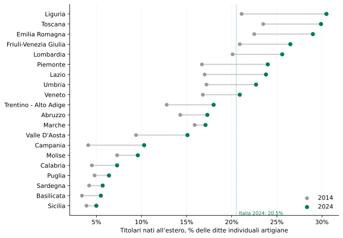
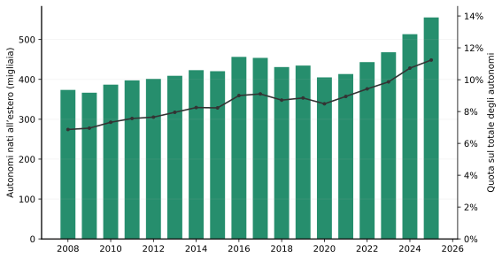

Immigrati nell’artigianato italiano
Titolari, lavoratori e territori: i dati sul contributo richiamato dal Presidente della Repubblica all’Assemblea della CNA
Paolo Volterra ![]()
Italiano. Il 20 novembre 2026 il Presidente della Repubblica ha affermato che gli immigrati inseriti nell’artigianato contribuiscono a tenere in vita mestieri e servizi, richiamando le aree interne e i borghi. Fra il 2014 e il 2024 i titolari di ditte individuali artigiane nati all’estero crescono di 33.846 unità e arrivano a 200.779, il 20,5% del totale; l’aumento compensa circa un quarto del calo dei titolari nati in Italia, e il comparto si riduce comunque del 9,2%. Nel 2025 il 30,2% delle assunzioni previste dalle imprese artigiane riguarda lavoratori immigrati, con una definizione cambiata rispetto all’anno precedente. Il discorso si riferisce a «molti casi» in territori specifici, che le medie provinciali non permettono di osservare: in media, dove più popolazione vive in aree interne, la quota di titolari nati all’estero è più bassa, e nelle province interne del Mezzogiorno l’aumento netto dei titolari nati all’estero compensa meno di un decimo del calo dei nati in Italia. Lo studio dei borghi delle Marche documenta concentrazioni di attività gestite da immigrati anche nell’entroterra e nei Sibillini, dove la presenza dipende da accessibilità e turismo. Il progetto della CNA di formazione nei Paesi d’origine indica le aree interne fra le aree pilota. Documentare i singoli casi richiede dati per comune, oggi non pubblicati.
English. On 20 November 2026 the President of the Italian Republic stated that immigrants working in craft businesses help keep trades and services alive, citing inner areas and small towns. Between 2014 and 2024 foreign-born owners of sole-proprietor craft businesses rose by 33,846 to 200,779, 20.5% of the total; the increase offsets about one quarter of the decline in Italian-born owners, and the sector still shrinks by 9.2%. In 2025, 30.2% of planned hires by craft businesses concern immigrant workers, under a definition changed from the previous year. The speech refers to “many cases” in specific places, which provincial averages cannot observe: on average, where more of the population lives in inner areas the foreign-born share of owners is lower, and in the inner provinces of the South the net increase in foreign-born owners offsets less than a tenth of the decline in Italian-born owners. The study of small towns in the Marche region documents clusters of immigrant-run businesses also in the hinterland and in the Sibillini mountains, where presence depends on accessibility and tourism. The CNA project for training workers in their countries of origin lists inner areas among its pilot areas. Documenting individual cases requires municipal data that are not published today.
artigianato, immigrazione, ditte individuali, aree interne, Excelsior, made in Italy
1 La frase e il suo contesto
All’Assemblea nazionale della CNA per gli ottant’anni della Confederazione, il 20 novembre 2026, il Presidente della Repubblica, Sergio Mattarella, ha legato la presenza degli immigrati nelle attività artigiane alla sopravvivenza di mestieri e servizi nei territori, con un riferimento esplicito alle aree interne e ai borghi lontani dai grandi centri e dalle principali reti di comunicazione [1].1
Il passaggio segue le considerazioni sullo squilibrio demografico, sull’ingresso dei giovani, sulla formazione e sull’apprendistato, e viene subito dopo l’apprezzamento per il progetto della CNA che forma lavoratori all’estero, disponibili a venire in Italia [1, pp. 2–3]. Per questa posizione nel testo la frase riguarda sia chi conduce un’attività artigiana sia chi vi lavora come dipendente. Le pagine che seguono esaminano quindi tre aspetti distinti: il ricambio dei titolari, il peso degli immigrati nelle assunzioni delle imprese artigiane e il legame con i territori più isolati.
Nello stesso discorso il Presidente Mattarella ricorda che l’artigianato conta oltre un milione e centomila imprese e, secondo le sue parole, oltre 2 milioni e 600 mila addetti [1, p. 1].
Il progetto richiamato, «Corridoi professionali», è descritto dalla CNA nella relazione alla Direzione nazionale del marzo 2026. I destinatari previsti sono 350 lavoratori egiziani, di cui almeno il 30% donne, e 50 lavoratori marocchini; il programma prevede 200 accessi al mercato del lavoro europeo, 130 in Italia e 70 in Spagna, con il coinvolgimento di circa 350 imprese artigiane. L’Emilia-Romagna è l’area principale; città pilota e aree interne sono indicate in Umbria e in Toscana; l’attivazione era prevista per giugno 2026 [2, p. 15]. Sono obiettivi dichiarati, non risultati. La base giuridica è l’articolo 23 del Testo unico sull’immigrazione, che consente l’ingresso fuori quota di lavoratori che hanno completato una formazione nel Paese d’origine [3].
2 I titolari di ditte individuali artigiane
2.1 Quanti sono e come cambiano
Unioncamere e InfoCamere classificano le ditte individuali artigiane secondo il paese di nascita del titolare, e chiamano «stranieri» i titolari nati all’estero [4]. Il criterio è anagrafico: comprende anche i cittadini italiani nati all’estero e chi ha acquisito la cittadinanza, e non coincide con la cittadinanza straniera.
Al 30 settembre 2024 i titolari nati all’estero sono 200.779, il 20,5% delle ditte individuali artigiane; dieci anni prima erano 166.933, il 15,5% [4].
| Titolare | 2014 | 2024 | Variazione | Variazione % |
|---|---|---|---|---|
| Nato in Italia | 911.364 | 778.348 | −133.016 | −14,6% |
| Nato all’estero | 166.933 | 200.779 | +33.846 | +20,3% |
| Totale | 1.078.297 | 979.127 | −99.170 | −9,2% |
Tabella 1: Ditte individuali artigiane per paese di nascita del titolare, 30 settembre 2014 e 2024. Elaborazione sulla tabella provinciale Unioncamere–InfoCamere.
In parole semplici: in dieci anni le ditte con titolare nato all’estero aumentano, quelle con titolare nato in Italia diminuiscono molto di più, e il numero complessivo di ditte scende.
L’aumento di 33.846 titolari nati all’estero corrisponde al 25,4% del calo di 133.016 titolari nati in Italia: circa un quarto della contrazione è compensato, e il comparto perde comunque 99.170 ditte. Si tratta di un confronto fra saldi: non dice se un nuovo titolare abbia rilevato l’attività di chi ha chiuso, né se nello stesso luogo sia rimasto lo stesso servizio.
Il testo del comunicato riporta variazioni leggermente diverse da quelle delle sue tabelle: +33.847 per i nati all’estero, −133.242 per i nati in Italia e −99.395 nel complesso [4]. Le tabelle, sia sommando le province sia nella riga nazionale, danno i valori usati qui; la tabella per età e genere conferma l’aumento di 33.846. La compensazione resta pari a circa un quarto con entrambe le serie.
2.2 Settori, origini e regioni
La presenza dei titolari nati all’estero si concentra nelle costruzioni, dove i titolari nati all’estero sono 117.024, il 29,1% delle ditte del settore. Nei servizi alle imprese la quota è del 27,8%; nelle altre attività di servizi, che comprendono buona parte dei servizi alla persona, il numero dei titolari nati all’estero cresce del 90,4% in dieci anni [4], tab. 2. I principali paesi di nascita sono Romania (36.792 titolari), Albania (33.075), Cina (15.657), Marocco (13.617) ed Egitto (12.861) [4].

Figura 1: Quota di titolari nati all’estero sul totale delle ditte individuali artigiane, per regione, 2014 e 2024. Elaborazione sulla tab. 1 Unioncamere–InfoCamere.
In parole semplici: in tutte le regioni la quota di titolari nati all’estero sale fra il 2014 e il 2024; resta molto più alta nel Centro-Nord che nel Mezzogiorno.
Le quote più alte sono in Liguria (30,5%) e in Toscana (29,9%), la più bassa in Sicilia (5,0%). La Campania registra la crescita più forte dei titolari nati all’estero, +147,3%, ma arriva a una quota del 10,3%: una crescita rapida su numeri piccoli lascia la presenza ancora contenuta [4], tab. 1.
2.3 Tre misure che non vanno sommate
Accanto alle ditte individuali circolano altre due misure, costruite su popolazioni diverse. Secondo il presidente di Unioncamere, Andrea Prete, nel 2024 le imprese artigiane «guidate da stranieri» sono oltre 220 mila, il 17,8% del totale, in crescita del 25,2% in dieci anni [5]. Il comunicato non ne precisa la definizione; la misura comprende presumibilmente anche le società e non è confrontabile con il conteggio delle sole ditte individuali per paese di nascita.
L’INPS conta invece le persone iscritte alla gestione previdenziale degli artigiani, anche per una parte dell’anno, e le classifica per cittadinanza. Nel 2025 gli artigiani con cittadinanza non comunitaria sono 110.912 su 1.297.710, l’8,5%, contro l’8,7% del 2024 e l’8,8% del 2023 [6, p. 86]. Il 69,9% ha l’azienda nelle regioni del Nord, contro il 55,9% del complesso degli artigiani; al Sud e nelle Isole si trova solo il 6,1% [6, p. 86]. Sono più giovani: il 23,3% ha meno di 40 anni, contro il 13,9% del totale, e il 21,9% ne ha più di 55, contro il 46,2%. Le cittadinanze più frequenti sono l’albanese (29,2%), la cinese (11,1%), la marocchina (9,1%), l’egiziana (8,9%) e la tunisina (4,6%) [6, pp. 86–87].
La distanza fra il 20,5% delle ditte individuali e l’8,5% degli iscritti INPS non indica un errore di una delle fonti: la prima conta i nati all’estero, compresi i comunitari e i naturalizzati, la seconda solo i cittadini di Paesi fuori dall’Unione europea.
3 Il lavoro autonomo nel complesso
L’indagine europea sulle forze di lavoro consente di guardare a tutti i lavoratori autonomi, artigiani e non, con lo stesso criterio del paese di nascita.

Figura 2: Lavoratori autonomi di 15-74 anni in Italia per paese di nascita: numero (migliaia, scala a sinistra) dei nati all’estero e quota sul totale degli autonomi (scala a destra). Eurostat, Labour Force Survey; la serie ha un’interruzione nel 2021.
In parole semplici: nel periodo gli autonomi nati all’estero aumentano, con una flessione fra il 2017 e il 2020 e una crescita più rapida negli ultimi anni; nello stesso tempo gli autonomi nel complesso diminuiscono, e la quota dei nati all’estero sale.
Fra il 2008 e il 2025 gli autonomi nati all’estero passano da 373,6 a 555,3 mila, e la loro quota sul totale degli autonomi sale dal 6,9% del 2008 all’11,2% del 2025; quelli nati in Italia diminuiscono del 13,4% [7]. La crescita della quota dipende dal numero, non da una maggiore propensione al lavoro in proprio: nel 2025 è autonomo il 14,8% degli occupati nati all’estero, contro il 21,6% dei nati in Italia [7].
4 I lavoratori delle imprese artigiane
4.1 Le assunzioni previste
Il Sistema Informativo Excelsior rileva le assunzioni che le imprese programmano. Nel 2025 le imprese artigiane prevedono di assumere personale immigrato per il 30,2% delle entrate, oltre 148 mila contratti, contro il 22,8% delle imprese non artigiane [8, p. 31]. Si tratta di intenzioni dichiarate, non di assunzioni effettuate, e non della quota di immigrati fra gli occupati.
Nel 2024 la quota era del 19% nelle artigiane e del 20% nelle non artigiane [9, p. 30]. Il passaggio al 30,2% non misura un aumento, perché dal 2025 la percentuale è calcolata escludendo le imprese che non hanno ancora deciso se assumere candidati immigrati [8, p. 31].2 Il confronto omogeneo fra i due anni non è pubblicato.
«A partire dal 2025 tale percentuale esprime la quota di candidati immigrati che le imprese prevedono di assumere al netto di quelle che non hanno ancora deciso in tal senso.» [8, p. 31], nota 10↩︎
4.2 I mestieri
La stessa indagine, nel volume dedicato ai lavoratori immigrati, riporta la quota di immigrati per professione su tutte le imprese, artigiane e non. La media delle professioni è del 23,4%; la quota sale al 41,9% fra sarti e tagliatori artigianali, al 35,1% fra i muratori, al 33,5% fra idraulici e posatori di tubazioni e al 27,6% fra gli elettricisti nelle costruzioni civili [10, p. 91]. Sono mestieri tipici dell’artigianato, ma il dato comprende anche le imprese senza qualifica artigiana.
Nel giugno 2025 il presidente di Unioncamere ha affermato che «un’impresa artigiana su 4 fa ricorso a lavoratori extra comunitari» e che quasi il 60% delle assunzioni programmate dalle imprese artigiane nel 2024 è risultato difficile da reperire [5]. Secondo i dati presentati all’Assemblea dal presidente della CNA, Dario Costantini, nei prossimi cinque anni le piccole imprese italiane avranno bisogno di circa 750 mila lavoratori [11].
5 Aree interne e borghi
5.1 Il confronto fra province
La Strategia nazionale per le aree interne classifica i comuni secondo la distanza dai servizi essenziali di istruzione, sanità e trasporto ferroviario. Per ciascuna provincia si calcola qui la quota di popolazione residente nei comuni intermedi, periferici e ultraperiferici, con la popolazione al 1° gennaio 2024 [12], [13], e la si confronta con la quota di titolari artigiani nati all’estero. Il confronto copre le 105 province della tabella artigiana, che esaurisce i totali regionali senza separare Barletta-Andria-Trani e Sud Sardegna. La popolazione è invece aggregata sui confini provinciali ISTAT: i residenti dei due territori non entrano nel confronto e non è ricostruita l’esatta corrispondenza con gli aggregati camerali. Inoltre, cinque codici comunali della popolazione 2024 non trovano corrispondenza nella classificazione del 2020, per fusioni, nuove istituzioni o trasferimenti provinciali. I risultati sono pertanto esplorativi; un controllo prudenziale esclude tutte le province di Puglia e Sardegna e quelle di Asti, Varese, Trapani, Rimini e Pesaro e Urbino, interessate dai codici comunali non abbinati. Si tratta di un confronto su un sottoinsieme, non di una ricostruzione dei confini.
| Ambito | Province | Correlazione | Valore p |
|---|---|---|---|
| Italia | 105 | −0,58 | <0,001 |
| Nord | 47 | −0,31 | 0,032 |
| Centro | 22 | −0,10 | 0,665 |
| Mezzogiorno | 36 | −0,08 | 0,660 |
Tabella 2: Correlazione di rango fra la quota di popolazione in aree interne e la quota di titolari artigiani nati all’estero, per provincia. Elaborazione su dati Unioncamere–InfoCamere e ISTAT; valori p senza correzione per confronti multipli.
In parole semplici: in Italia le province con più abitanti nelle aree interne hanno, in proporzione, meno artigiani nati all’estero; dentro il Centro e il Mezzogiorno la relazione quasi scompare, mentre al Nord resta, più debole.
La correlazione nazionale, −0,58, riflette in gran parte la distanza fra il Centro-Nord, dove le quote di titolari nati all’estero sono alte, e il Mezzogiorno, dove sono basse e le aree interne sono più estese. Al Nord una relazione negativa resta anche dentro la ripartizione (−0,31, p = 0,032). Le medie provinciali descrivono quindi la distribuzione complessiva e non isolano i singoli territori a cui si riferisce il discorso.
Anche la compensazione del calo dei titolari nati in Italia non è più alta dove le aree interne pesano di più: la correlazione è −0,15, con p = 0,12, su 104 province; resta esclusa Bolzano, dove i titolari nati in Italia non diminuiscono.
5.2 Le province più interne
| Gruppo | Province | Aumento nati all’estero | Calo nati in Italia | Compensazione |
|---|---|---|---|---|
| Nord | 4 | 1.622 | 1.827 | 88,8% |
| Nord senza Bolzano | 3 | 739 | 2.222 | 33,3% |
| Centro | 6 | 1.789 | 3.759 | 47,6% |
| Mezzogiorno | 25 | 1.670 | 17.453 | 9,6% |
Tabella 3: Province nel terzo con la quota più alta di popolazione in aree interne: aumento dei titolari nati all’estero e calo dei titolari nati in Italia, 2014–2024, per ripartizione. Elaborazione su dati Unioncamere–InfoCamere e ISTAT.
In parole semplici: nelle province più interne del Mezzogiorno l’aumento netto dei titolari nati all’estero compensa meno di un decimo delle ditte perse dai titolari nati in Italia; al Centro e al Nord coprono di più, ma su poche province.
Le 25 province del Mezzogiorno di questo gruppo, dove vive in aree interne il 55% della popolazione, registrano una compensazione del 9,6%: fra i tre gruppi territoriali è quello con la minore compensazione del calo. Questo rapporto confronta variazioni nette del numero di titolari e non misura aperture, chiusure o subentri. Il dato del Nord, 88,8%, dipende da Bolzano, unica provincia del gruppo in cui i titolari nati in Italia aumentano (da 8.603 a 8.998), mentre quelli nati all’estero crescono di 883; senza Bolzano la compensazione scende al 33,3%. Nel Centro, 47,6%, pesano Grosseto e Livorno, dove l’aumento dei nati all’estero supera il calo dei nati in Italia.
Nel controllo prudenziale sulle 91 province rimanenti, la correlazione nazionale è −0,57. Ricalcolando i terzili su questo sottoinsieme, la compensazione nel terzo più interno è del 28,2% al Nord, del 47,6% al Centro e all’8,7% nel Mezzogiorno.
Il valore più basso resta nel Mezzogiorno, ma i livelli degli altri gruppi cambiano anche perché le soglie e la composizione dei terzili sono diverse. Questa sensibilità invita a non interpretare i rapporti provinciali come misure del ricambio nei singoli borghi.
5.2.1 Il confronto su confini comuni
La nota metodologica del Centro Studi Tagliacarne distingue i 105 territori camerali dalle 107 province statistiche: Bari, Foggia e i quattro territori sardi richiedono una ricostruzione dai comuni; anche le riallocazioni fra Pesaro e Urbino e Rimini richiedono accorgimenti specifici [14, p. 1] e nota 1. Per evitare di stimare dove si trovino le imprese, si uniscono Bari, Foggia e Barletta-Andria-Trani in un ambito, i territori della Sardegna in un secondo e Pesaro e Urbino con Rimini in un terzo. Le altre province restano distinte.
La traslazione ufficiale dei codici comunali consente inoltre di raccordare la classificazione delle aree interne con la popolazione osservata nel 2024 [15]. I comuni fusi hanno predecessori concordi nella distinzione fra aree interne e non interne; a Misiliscemi, nato per scorporo da Trapani, si applica la classe del comune d’origine, senza ricalcolare le distanze dai servizi.
Il confronto comprende così 100 ambiti territoriali, costituiti da 97 province e tre aggregati, e copre tutti i 7.900 comuni e i 58.971.230 residenti della fonte demografica utilizzata. Tutti i titolari della tabella camerale restano inclusi; la correlazione nazionale fra le due quote è −0,58.
La relazione negativa nazionale resta quindi visibile anche accoppiando territori comuni e recuperando l’intera popolazione. Questo confronto usa unità di ampiezza diversa e non ricostruisce le 107 province separatamente: per farlo occorrerebbero i dati artigiani comunali.
Il confronto provinciale ha un limite di fondo: una ditta registrata in una provincia con molti comuni interni può operare nel capoluogo o sulla costa. Per sapere se un immigrato tiene aperta una bottega in un borgo servirebbero i dati per comune e nel tempo, che oggi non sono pubblicati.
5.3 Il caso delle Marche
Lo studio di Simone Betti sui borghi storici delle Marche osserva da vicino l’imprenditoria immigrata nel suo complesso, non solo artigiana. Le attività si concentrano sulla costa e nella collina; fra le aree di rarefazione c’è la montagna settentrionale, l’alta provincia di Pesaro e Urbino, con minore accessibilità e flussi turistici contenuti [16, p. 142]. L’accessibilità, il turismo, le reti delle comunità e le politiche locali sono indicati come fattori della distribuzione.3 Lo stesso studio riporta, dal Rapporto Immigrazione e Imprenditoria di IDOS e CNA, circa 15.000 imprese gestite da immigrati nelle Marche, il 9% delle imprese attive della regione contro il 10,5% nazionale [16, p. 138].
Lo stesso studio individua quattro aree di concentrazione delle attività gestite da immigrati: due costiere, a nord e a sud, i borghi dell’entroterra maceratese attorno a Camerino, con l’ospitalità diffusa, e l’area dei Sibillini e dell’ascolano, ad Amandola, Montefortino e Acquasanta Terme, con servizi legati al turismo naturalistico e al benessere [16, pp. 141–142]. Sono esempi di presenza in territori interni, legati a condizioni locali precise.
«L’accessibilità delle aree è un fattore determinante, sia in termini di infrastrutture di trasporto sia di prossimità rispetto ai principali centri urbani.» [16, p. 142]↩︎
6 La qualità dell’inserimento
Il Centro Studi e Ricerche IDOS, che cura con la CNA il Rapporto Immigrazione e Imprenditoria, legge lo sviluppo dell’imprenditoria immigrata anche come risposta a condizioni di partenza svantaggiate e come presidio delle funzioni che gli imprenditori nati in Italia abbandonano [17].4 È una lettura coerente con «tenere in vita mestieri», con un accento sulle condizioni di chi li svolge.
Il rapporto dell’OCSE sull’integrazione dei migranti in Italia, su dati del 2023, documenta la concentrazione nelle professioni non qualificate: vi lavora oltre un quarto degli immigrati e oltre il 29% dei nati fuori dall’Unione europea; nel Sud le quote salgono al 35% e al 41%. Le professioni ad alta qualificazione sono il 14% dell’occupazione immigrata, contro il 40% di quella dei nati in Italia [18]. Il dato riguarda tutti i lavoratori, non gli artigiani, e non qualifica i mestieri artigiani come lavoro non qualificato; segnala che la tenuta delle attività e la qualità del lavoro che la sostiene vanno osservate separatamente.
7 Un tema con una lunga storia
L’artigianato come presidio della tradizione nazionale ha precedenti espliciti. Il 23 marzo 1936, alla seconda Assemblea nazionale delle Corporazioni, Mussolini afferma che «l’artigianato sarà aiutato: esso, specie in Italia, è insostituibile. Non è solo per omaggio a una gloriosa tradizione che lo difendiamo, ma per la sua utilità presente» [19, p. 149]. Il testo del discorso, pubblicato integralmente dalla Rivista bancaria, colloca questo passaggio in un programma di autonomia economica e di preparazione alla guerra, distinguendo l’iniziativa privata della piccola impresa dal controllo statale delle grandi industrie legate alla difesa [19, pp. 145–151]. Toesca di Castellazzo riprende il passo nelle sue lezioni del 1939, con un rinvio esplicito al discorso del 23 marzo 1936 [20, pp. 99–100].
Nel contributo «Le attività artigiane», datato 12 dicembre 1930 e pubblicato l’anno successivo, Vincenzo Buronzo si presenta come commissario governativo della Federazione fascista autonoma degli artigiani d’Italia [21, pp. 150–151]. Il testo distingue la produzione artistica da quella rivolta alla clientela rurale e descrive le difficoltà di carradori, sellai, maniscalchi, sarti e falegnami durante la crisi: la funzione dei mestieri nei borghi compare quindi anche nella testimonianza di un dirigente dell’organizzazione fascista, entro il suo registro celebrativo del regime [21, p. 151]. Secondo la sintesi nell’abstract del saggio di Anna Pellegrino, la Federazione nasce nel 1926 e il ritorno al corporativismo promesso agli artigiani resta illusorio e la Federazione non ottiene autonomia; prima del fascismo la maggiore organizzazione artigiana, nata nel 1861, aveva un’impronta democratica e mazziniana [22]. Secondo la sintesi nell’abstract del contributo di Anna Pina Paladini, le politiche degli anni Trenta servono soprattutto a contenere la crisi e a rafforzare il consenso [23].
Nel discorso del 2026 il Presidente Mattarella attribuisce alla CNA, nei suoi ottant’anni, il merito di aver cooperato «a liberare la società dal corporativismo, dalle sue pastoie, rendendo libera la creatività» [1, p. 1].
La legge sul made in Italy del 2023 riprende il registro della tradizione. L’articolo 1 tutela le «radici culturali nazionali», da valorizzare «non solo a fini identitari, ma anche per la crescita dell’economia nazionale»; l’articolo 2 orienta l’azione delle amministrazioni «ai princìpi del recupero delle tradizioni, della valorizzazione dei mestieri e del sostegno ai giovani» [24]. Gli stranieri, come persone, compaiono nella legge solo all’articolo 56, che prevede la revoca o il diniego del rinnovo del permesso di soggiorno per i reati di contraffazione [24]. La legge non menziona il contributo degli immigrati ai mestieri che intende valorizzare, pur in un comparto in cui un titolare di ditta individuale su cinque è nato all’estero.
8 Conclusioni
Sul piano nazionale i dati documentano il contributo richiamato dal Presidente della Repubblica. I titolari nati all’estero sono un quinto delle ditte individuali artigiane e la loro crescita compensa circa un quarto del calo dei titolari nati in Italia; le imprese artigiane prevedono di affidare agli immigrati una parte rilevante delle nuove assunzioni, anche se il confronto con il 2024 è interrotto da un cambio di definizione.
Sul piano territoriale le medie provinciali mostrano che nelle province più interne la presenza di artigiani nati all’estero è in media più bassa e l’aumento netto dei titolari nati all’estero compensa una parte minore del calo dei nati in Italia nel gruppo più interno del Mezzogiorno; i casi di continuità nei borghi, come quelli documentati nelle Marche, sono legati a condizioni locali. Il progetto della CNA indica le aree interne fra le aree pilota. Dati per comune sulle attività aperte e chiuse permetterebbero di documentare i singoli casi e di misurare l’esito del progetto.
9 Riferimenti
Nota metodologica
Questo documento nasce dall’interazione di tre componenti. L’autore definisce le domande, esercita il giudizio critico e assume la responsabilità scientifica ed editoriale del risultato. Strumenti di intelligenza artificiale generativa sono impiegati a supporto della ricerca bibliografica, della lettura, della sintesi, della riorganizzazione argomentativa e della revisione del testo. Un’infrastruttura open source sviluppata dall’autore automatizza il reperimento, l’armonizzazione e il controllo dei dati dalle fonti statistiche ufficiali, e mantiene l’elaborazione documentata e riproducibile.
Le fonti sono pubblicamente accessibili e citate con la loro denominazione ufficiale; l’analisi è pertanto integralmente auditabile e replicabile da terzi a partire da esse. Le tabelle e i grafici sono elaborazioni dell’autore: calcoli, aggregazioni, trasformazioni e scelte di rappresentazione sono attribuibili all’autore e non agli enti produttori dei dati.
La responsabilità per le fonti utilizzate, le analisi condotte, le elaborazioni effettuate, le interpretazioni proposte e le conclusioni formulate resta interamente in capo all’autore. L’intelligenza artificiale è stata impiegata come ambiente di supporto cognitivo ed editoriale, non come fonte primaria, autore autonomo o sostituto del giudizio critico.